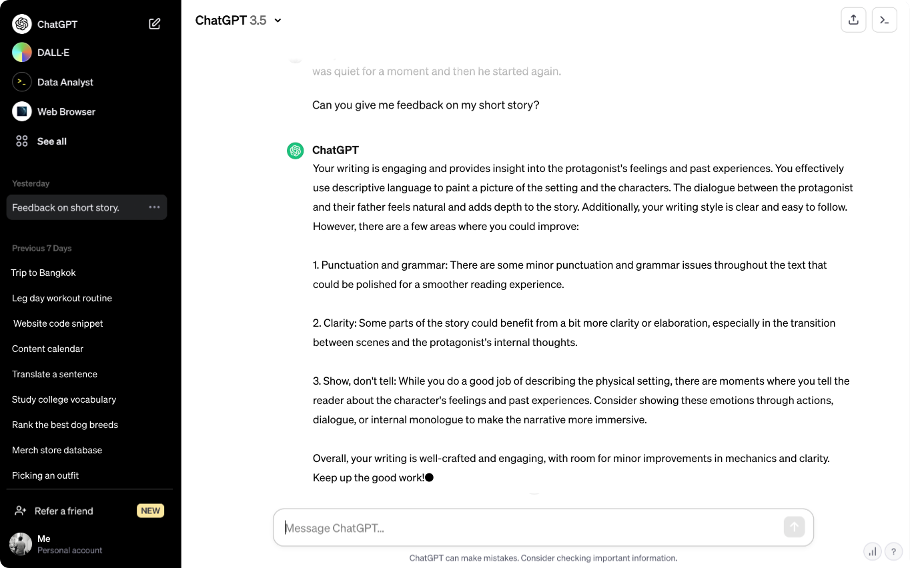

ChatGPT

ChatGPT is a language model developed by OpenAI. It is built on the GPT (Generative Pre-trained Transformer) architecture, specifically GPT-3.5, and is intended to produce human-like text responses in conversational scenarios.
ChatGPT can learn a vast array of knowledge and linguistic patterns because it has been trained on a vast amount of text data from the internet. Because it can comprehend and produce text in natural language, it's perfect for interactive conversations with humans.
The model can comprehend context, preserve coherence, and provide relevant and meaningful responses. It can handle a wide range of themes and queries, from factual inquiry to creative suggestions and opinionated debates.
ChatGPT has proven useful in a few applications, such as content creation, language translation, chatbots for customer service, virtual assistants, and more. It is an effective technique for conversing interactively and producing responses that resemble those of a human.
However, it's important to note that ChatGPT has limitations. It may occasionally generate incorrect or nonsensical answers, be sensitive to input phrasing, or exhibit biased behavior based on the biases present in the training data. These limitations highlight the ongoing challenges in developing AI systems that are robust, unbiased, and fully aligned with human values.
OpenAI promotes the appropriate use of AI technology to guarantee that its advantages are realized while minimizing possible risks. It also keeps enhancing and improving language models like ChatGPT.

Chat-GPT has been successfully used in various applications that involve interactive conversations and generating human-like responses. Some specific applications where Chat-GPT has shown effectiveness include:
- Virtual Assistants: Chat-GPT can serve as a conversational agent in virtual assistants, providing information, answering questions, and assisting users with tasks.
- Customer Support Chatbots: Chat-GPT can be employed as a chatbot in customer support systems, offering automated responses to customer inquiries and providing basic assistance.
- Language Translation: Chat-GPT can be utilized for language translation tasks, allowing users to interact with it in one language and receive responses in another, facilitating multilingual communication.
- Content Generation: Chat-GPT can generate creative and engaging content, such as blog posts, articles, or even fictional stories, based on prompts or specific topics.
- Personalized Recommendations: Chat-GPT can offer personalized recommendations based on user preferences, helping users discover relevant products, services, or content.
- Learning and Education: Chat-GPT can assist in educational settings by answering students' questions, providing explanations, and offering interactive learning experiences.
- Writing Assistance: Chat-GPT can serve as a writing companion, suggesting ideas, providing grammar and style suggestions, and assisting in the generation of text.
These are just a few examples of the diverse applications where Chat-GPT has been successfully utilized. Its ability to generate contextually relevant and human-like responses makes it a valuable tool in various domains that involve human-computer interaction and natural language processing.